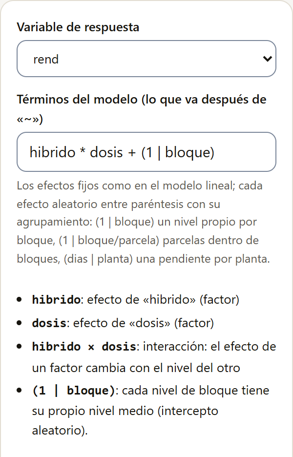
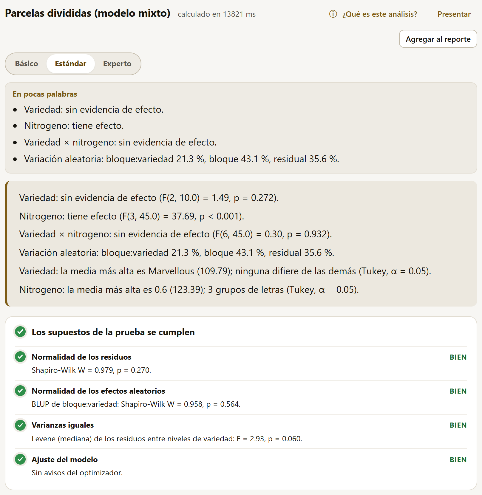
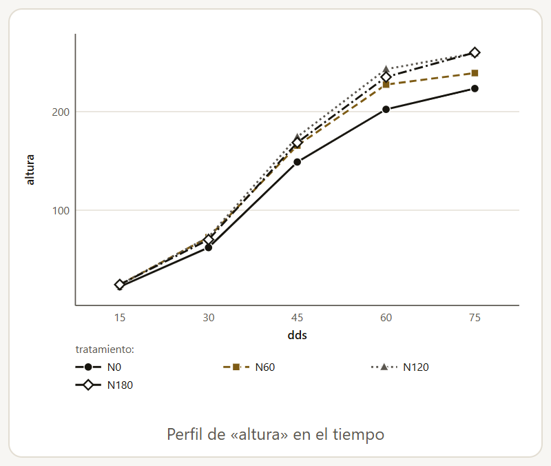
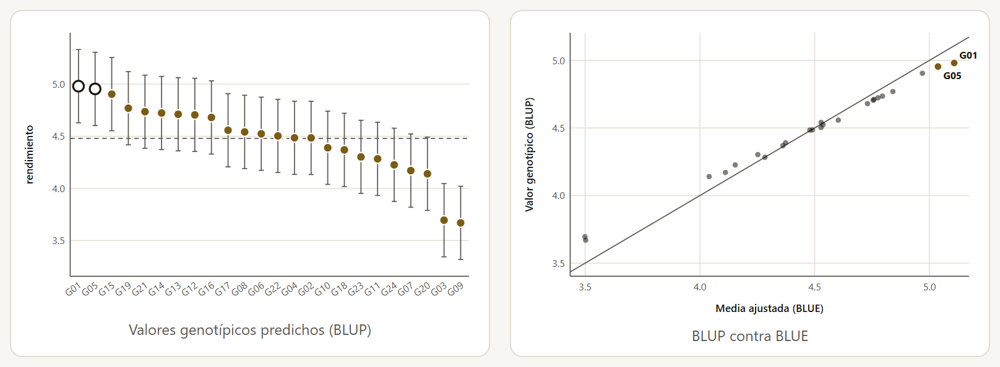
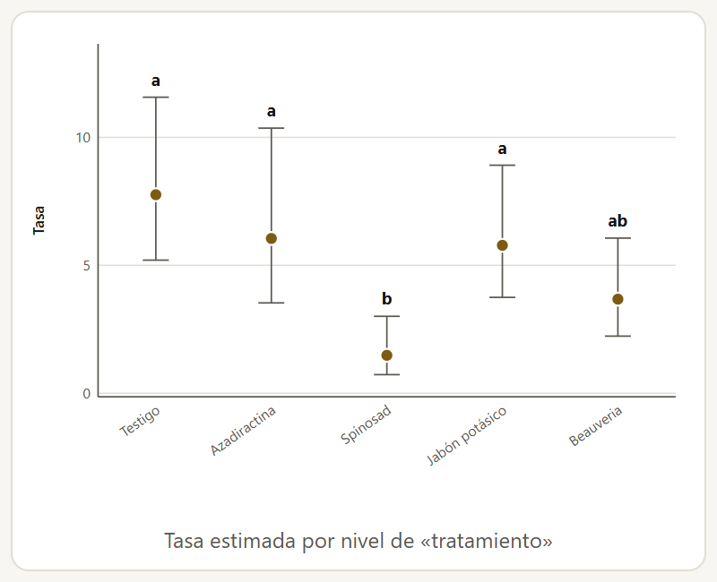
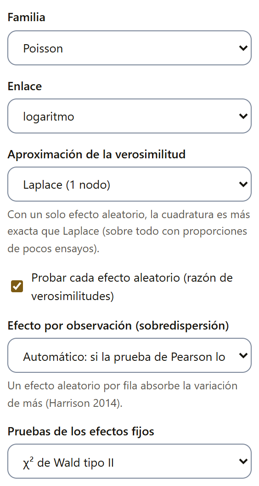

4.15Modelos lineales mixtos
Un modelo mixto separa los efectos fijos, los que se eligieron a propósito y sobre los que se quiere concluir (los híbridos, las dosis), de los aleatorios, que representan una muestra de muchos posibles (los bloques, las localidades, los años, las plantas medidas varias veces). Con ellos, cada fuente de variación lleva su propio error, las parcelas perdidas no desarman el análisis y la información que hay entre bloques no se pierde.
Los seis métodos de la familia corren en el motor R dentro del navegador (sección 4.6), con los paquetes lme4, lmerTest y emmeans; las medidas repetidas usan nlme. La primera vez se descarga el motor; después funciona sin internet.
| Método | Para qué |
|---|---|
| Modelo lineal mixto (fórmula) | Cualquier combinación de efectos fijos y aleatorios, escrita como fórmula. |
| Bloques al azar con bloques aleatorios | Uno a tres factores en bloques completos; con parcelas perdidas recupera la información entre bloques. |
| Parcelas divididas (modelo mixto) | Parcelas grandes, subparcelas y, si se pide, sub-subparcelas, con sus errores como efectos aleatorios. |
| Látice y alfa-látice (recuperación entre bloques) | Bloques incompletos aleatorios dentro de repeticiones: las medias recuperan la información entre bloques. |
| Ensayos en varias localidades | Genotipos fijos en localidades con repeticiones; la localidad y la interacción genotipo × localidad, aleatorias. |
| Medidas repetidas en el tiempo | La misma unidad medida en varias fechas: elige la estructura de covarianza entre fechas. |
El modelo escrito como fórmula

El campo Términos del modelo (lo que va después de «~») recibe la parte derecha de la fórmula. Los efectos fijos se escriben como en el modelo lineal general (sección 4.10); cada efecto aleatorio va entre paréntesis con su agrupamiento:
(1 | bloque): un nivel propio para cada bloque (intercepto aleatorio).(1 | bloque/parcela): parcelas dentro de bloques.(dias | planta): una pendiente propia para cada planta, correlacionada con su intercepto; con(dias || planta), sin esa correlación.
Debajo del campo, la app explica cada término que leyó, para confirmar que el modelo es el que se quería. Las numéricas que son tratamientos (una dosis) se marcan en Numéricas que son tratamientos (factor).
Siguen Comparar las medias de (casillas con los factores fijos que entran como efecto principal; por omisión, los tres primeros), Dentro de cada nivel de (con dos factores o más, para comparar uno por separado en cada nivel de otro cuando interactúan), el Ajuste de las comparaciones (Tukey, Bonferroni, Holm, Šidák o Sin ajuste (DMS)), las Sumas de cuadrados (tipo III, II o I), los Grados de libertad de las pruebas (Satterthwaite, o Kenward-Roger, más exacto con pocos grupos y más lento) y la Estimación: REML, que da componentes de varianza sin sesgo, o máxima verosimilitud, para comparar modelos con distintos efectos fijos. Kenward-Roger solo funciona con REML. Al final van el Nivel de confianza y el Nivel de significancia.
Con el maíz y los bloques aleatorios (hibrido * dosis + (1 | bloque)), las pruebas de los híbridos, las dosis y su interacción dan las mismas F que el ANOVA de bloques (60.63, 292.15 y 1.47), porque los datos están balanceados. Lo que cambia es el error estándar de las medias: incluye la varianza de los bloques (el 43.9 % de la variación aleatoria), así que las medias de los híbridos llevan EE de 0.1079 con 4.25 grados de libertad, mientras que sus diferencias, en las que los bloques se cancelan, conservan los 33 del error.
Con los dos factores del maíz, el resultado trae diez cuadros: las pruebas de los efectos fijos, los componentes de varianza con su porcentaje, la prueba de los efectos aleatorios (razón de verosimilitudes, como lmerTest::ranova; su p es conservador, porque una varianza no puede ser negativa, y el verdadero suele ser la mitad), las medias marginales de cada factor con sus letras y sus comparaciones por pares, los coeficientes, las predicciones de los efectos aleatorios (BLUP) y el ajuste del modelo. Cuando un factor pasa de 45 pares, su cuadro de pares no se muestra, aunque las letras sí; con más de 50 niveles, solo las medias. Si los BLUP pasan de 120 renglones, su cuadro tampoco aparece: una nota bajo los coeficientes lo dice, y el código R equivalente los da con ranef().
Las gráficas son las medias marginales del primer factor comparado, con su intervalo y sus letras (con Dentro de cada nivel de, una línea por cada nivel del otro factor), los residuos contra los valores ajustados y su gráfico Q-Q. El semáforo revisa la normalidad de los residuos (Shapiro-Wilk), la de los efectos aleatorios (los BLUP del primer agrupamiento, si tiene 5 niveles o más), la igualdad de varianzas (Levene con la mediana, entre los niveles del primer factor fijo) y los avisos del optimizador; un ajuste singular sale en ámbar.
Los diseños como modelo mixto
Los otros cuatro métodos piden los papeles del diseño, arman la fórmula solos y la muestran bajo el formulario («Modelo: …»). Las columnas numéricas que hacen de tratamiento se toman como factor y las pruebas usan sumas de cuadrados tipo III; las demás opciones son las del modelo con fórmula. En los bloques al azar con dos o tres factores y en las parcelas divididas, el formulario ofrece también Dentro de cada nivel de.
Las parcelas divididas piden el Factor en las parcelas grandes, el Factor en las subparcelas, si hace falta el Factor en sub-subparcelas (opcional), y los Bloques (aleatorios); llevan los bloques y las parcelas grandes (y, con un tercer factor, las subparcelas) como efectos aleatorios. Si las parcelas grandes se sortearon sin bloques, se deja — sin bloques — y se elige la Repetición (identifica cada parcela grande). Con la avena de Yates (1935), las pruebas son las del análisis por estratos de la sección 4.10, pero el modelo mixto sigue siendo exacto con parcelas perdidas, cuando el análisis por estratos ya no lo es. Para ver el nitrógeno por separado en cada variedad se elige la variedad en Dentro de cada nivel de: el cuadro de medias da las letras del nitrógeno en cada variedad y la gráfica traza una línea por variedad.

| Grupo | Varianza | DE | % del total |
|---|---|---|---|
| bloque:variedad (las parcelas grandes) | 106.1 | 10.30 | 21.31 |
| bloque | 214.5 | 14.65 | 43.10 |
| Residual | 177.1 | 13.31 | 35.59 |
En el látice y alfa-látice se eligen los Tratamientos (genotipos, variedades), la Repetición y el Bloque incompleto (dentro de la repetición). Los bloques incompletos son aleatorios y las medias de los genotipos recuperan la información entre bloques, que el análisis intrabloque (sección 4.10) desperdicia; la casilla Repeticiones también aleatorias cambia el modelo cuando las repeticiones también son una muestra. Con el alfa-látice de 24 genotipos, los genotipos difieren (F(23, 34.7) = 5.45, p < 0.001) y los bloques dentro de las repeticiones se llevan el 42.1 % de la variación aleatoria.
Los ensayos en varias localidades piden los Genotipos (fijos), la Localidad o ambiente y la Repetición (dentro de cada localidad); ponen la localidad, la repetición dentro de cada localidad y la interacción genotipo × localidad como aleatorias. La casilla Localidades fijas (solo estas localidades interesan) las vuelve efecto fijo. En la avena de 14 ambientes, los genotipos difieren (F(9, 117) = 5.41) y el ambiente se lleva el 79.7 % de la variación, contra el 6.5 % de la interacción. Ahí los BLUP suman 196 renglones (14 ambientes, 42 repeticiones y 140 combinaciones genotipo × ambiente), así que su cuadro no se muestra y la nota bajo los coeficientes lo avisa. Para estudiar la interacción misma (estabilidad, AMMI, GGE) está la familia de multiambiente (sección 4.20).
Al pie de los bloques al azar, las parcelas divididas y el látice como modelo mixto, la franja «Continúa en la suite LABG» sugiere AgriDesign, que genera la aleatorización, el croquis y la hoja de campo del diseño (capítulo 10).
Medidas repetidas en el tiempo
Cuando la misma planta, parcela o animal se mide en varias fechas, las medidas de una unidad se parecen entre sí, y más cuanto más cercanas están las fechas. El método pide el Tiempo (fecha de medición) (numérico o factor), la Unidad medida en cada fecha (planta, parcela, animal) (su número puede repetirse en cada tratamiento: la unidad es la combinación de unidad, tratamiento y bloque), los Factores de tratamiento (hasta 2; pueden faltar) y los Bloques. La Estructura de covarianza entre fechas puede fijarse o dejarse en La mejor según el criterio (se comparan todas), que ajusta las candidatas y elige la de menor valor según el Criterio para elegirla (AIC o BIC). La AR(1) continua entra solo con el tiempo numérico, y la no estructurada, con 8 fechas o menos (salvo que se pida); la que no se puede ajustar queda marcada «no se pudo ajustar».
| Estructura | Parámetros | AIC | BIC | |
|---|---|---|---|---|
| Independientes | 24 | 486.6 | 535.6 | |
| Simetría compuesta | 25 | 474.3 | 525.4 | |
| Simetría compuesta heterogénea | 29 | 431.4 | 490.6 | |
| AR(1) | 25 | 451.8 | 502.8 | |
| AR(1) heterogénea | 29 | 420.1 | 479.4 | elegida |
| AR(1) continua | 25 | 451.8 | 502.8 | |
| No estructurada | 38 | 427.6 | 505.3 |
La conclusión dice cuál estructura ganó y prueba los tratamientos, el tiempo y su interacción. La AR(1) supone que la correlación baja con la distancia entre fechas (φ, φ², φ³…); la heterogénea deja además una varianza propia para cada fecha, lo que hace falta cuando la planta crece y su variación también. La AR(1) continua usa la distancia real entre fechas desiguales. En el maíz gana la AR(1) heterogénea, con φ = 0.778 entre fechas vecinas.

El tratamiento solo no tiene efecto (F(3, 57) = 1.39, p = 0.256), pero la interacción con el tiempo sí (F(12, 57) = 4.29, p < 0.001): a los 15 días las cuatro dosis miden lo mismo y desde los 30 días el testigo sin nitrógeno se queda atrás. Por eso la app propone comparar los tratamientos Dentro de cada nivel de la fecha, y su cuadro de medias da las letras de cada fecha por separado. Otro cuadro da la matriz estimada de covarianzas y correlaciones entre fechas.
Las pruebas usan los grados de libertad del error, N − p, para todos los términos, como nlme. El semáforo revisa la normalidad de los residuos normalizados (Shapiro-Wilk) y la igualdad de sus varianzas entre fechas (Levene); si alguno falla, propone una estructura heterogénea o una transformación.
4.16Componentes de varianza, heredabilidad y repetibilidad
Tres métodos para la genética cuantitativa y el mejoramiento, que corren en el navegador sin el motor R: estiman los componentes de varianza por REML (con el algoritmo de información promedio) y se validaron contra lme4.
Componentes de varianza
Dicen cuánta variación aporta cada factor aleatorio. Se eligen los Factores aleatorios (hasta 4), Cómo se relacionan (Cruzados; Anidados (cada uno dentro de los anteriores), en el orden de la tabla; o Cruzados, con sus interacciones dobles) y, si hace falta, los Factores fijos (opcional, hasta 3), que entran como efectos principales y no se prueban: para sus pruebas F está el modelo lineal mixto. En el alfa-látice, con los genotipos fijos y los bloques anidados en las repeticiones, la repetición aporta el 43.6 % de la varianza (σ² = 0.1139), los bloques dentro de la repetición el 23.7 % y el error el 32.6 %. Cada componente lleva su EE y su prueba de razón de verosimilitudes, con el p de la mezcla ½χ²0 + ½χ²1, porque una varianza no puede ser negativa: la repetición da χ² = 6.41 (p = 0.006) y los bloques, χ² = 5.01 (p = 0.013). Con solo tres repeticiones, la varianza de la repetición es muy imprecisa: su EE, 0.128, es mayor que la estimación. La gráfica muestra el porcentaje de la varianza total que aporta cada componente.
Para un intercepto aleatorio, la prueba de los modelos mixtos de la sección 4.15 (ranova) da el p de χ² con 1 grado de libertad, que es conservador; estos tres métodos dan el de la mezcla ½χ²0 + ½χ²1, que es la mitad. Con el mismo modelo (y REML), la varianza y el χ² coinciden: solo cambia la forma de calcular el p.
Heredabilidad y BLUP de genotipos
Con los genotipos como aleatorios, el método estima la varianza genética, la heredabilidad y el valor genotípico de cada uno. Se eligen los Genotipos (aleatorios), la Repetición o bloque completo (fijo), el Bloque incompleto dentro de la repetición (aleatorio), para el alfa-látice y otros diseños con bloques incompletos, y el Ambiente o localidad (fijo); con varios ambientes, la interacción genotipo × ambiente entra como aleatoria y la conclusión compara su varianza con la genética. Bajo los papeles, la app muestra el modelo que armó («Modelo: …») y el título del resultado dice el diseño que entendió. Para la ganancia por selección se elige la Proporción seleccionada (de 5 % a 50 %) y, en Se seleccionan los valores, los mayores (rendimiento, peso, contenido) o los menores (días a floración, altura, daño).
Si falta la repetición o el bloque incompleto, su variación pasa al error, sin aviso, y la heredabilidad suele bajar: con el alfa-látice, la H² en medias es 0.840 con las repeticiones y los bloques, 0.780 solo con las repeticiones y 0.580 sin ninguno de los dos («completamente al azar», dice entonces el título). La app solo se detiene cuando hay una sola parcela por genotipo y ambiente, porque entonces la interacción genotipo × ambiente se confunde con el error.

La conclusión empieza por la varianza genética (σ²g = 0.1429, χ² = 23.62, p < 0.001). La heredabilidad en medias es 0.840 ± 0.063: el 84 % de la variación entre las medias de los genotipos es genética. Como el ensayo tiene bloques incompletos, el cuadro de heredabilidad da también las de Cullis (0.809) y de Piepho y Möhring (0.803), las más fieles con datos desbalanceados o bloques incompletos (Schmidt y col., 2019), y la heredabilidad por parcela (0.636). Los parámetros genéticos incluyen los coeficientes de variación genético (8.44 %) y del error (6.38 %); su razón, 1.323, mayor que 1, indica condiciones favorables para la selección.
La ganancia esperada al seleccionar 2 de los 24 genotipos (el 10 % de 24, redondeado; la nota del cuadro da el 8.3 % real y la intensidad de selección, i = 1.840) se calcula de tres maneras: con la media de los BLUP seleccionados (0.4881, el 10.90 % de la media), con la ecuación del criador i·H²·σF (0.6374) y con el diferencial de selección de los BLUE por H² (0.4981). El último cuadro ordena los genotipos con su BLUP, su EE, su confiabilidad y su media ajustada (BLUE), y marca los seleccionados (G01 y G05). Los BLUP se encogen hacia la media general en proporción a lo poco que se sabe de cada genotipo; por eso, en la gráfica, la nube de los BLUP contra los BLUE es más plana que la diagonal.
El semáforo de los tres métodos revisa la normalidad de los residuos y la de los efectos aleatorios del primer término (Shapiro-Wilk de sus BLUP, con 5 niveles o más), las observaciones atípicas (residuos de más de 3.5 desviaciones estándar) y el ajuste REML: si convergió y si algún componente quedó en cero, en la frontera y sin EE. Con el alfa-látice sale en ámbar la normalidad de los residuos (p = 0.011 en la heredabilidad): es una advertencia, no un error, y conviene revisar si hay parcelas fuera de lo común.
Repetibilidad
Cuando el mismo individuo se mide varias veces (las cosechas de un árbol, las lactancias de un animal), la repetibilidad es la correlación entre dos medidas del mismo individuo. Se eligen el Individuo medido varias veces (árbol, planta, animal) y, si hace falta, los Factores fijos (opcional: cosecha, año, evaluador). Con 20 guayabos en cuatro cosechas (la cosecha como factor fijo), r = 0.532 ± 0.116: el 53 % de la variación entre medidas se debe a diferencias permanentes entre árboles. Con 3.69 medidas por árbol (la media armónica), la determinación del valor permanente es R² = 0.807, y la conclusión agrega que para una determinación de 90 % harían falta 8 medidas por árbol.
| R² deseada | Medidas (η) | Redondeado |
|---|---|---|
| 0.80 | 3.53 | 4 |
| 0.85 | 4.99 | 5 |
| 0.90 | 7.93 | 8 |
| 0.95 | 16.74 | 17 |
| 0.99 | 87.25 | 88 |
El último cuadro da el valor permanente predicho de cada árbol (la media general más su BLUP), con su EE y su confiabilidad. Las gráficas son ese valor de cada árbol, de mayor a menor con su intervalo, y la determinación según el número de medidas, de 1 a 10, que muestra cuánto se gana con cada cosecha más.
4.17Modelos lineales generalizados
Los conteos (insectos por brote, lesiones por hoja), las proporciones (semillas germinadas de las sembradas) y los tiempos o concentraciones no tienen la varianza constante ni la distribución normal que pide el ANOVA. En lugar de transformarlos, un modelo lineal generalizado usa la distribución que les corresponde y un enlace que conecta la media con los tratamientos, y presenta los resultados en la escala original: tasas, probabilidades y medias.
| Método | Para qué |
|---|---|
| Conteos (Poisson y binomial negativa) | Poisson, cuasi-Poisson o binomial negativa, elegida por la sobredispersión; tratamientos en bloques, covariables y exposición. |
| Proporciones (binomial) | Binomial o cuasibinomial: éxitos de n ensayos o respuestas 0/1; enlace logit, probit o log-log complementario; corrección de Firth para la separación. |
| Respuestas positivas asimétricas (gamma) | Gamma o gaussiana inversa, para tiempos, concentraciones o pesos cuya varianza crece con la media. |
| Modelo lineal generalizado (fórmula) | Cualquiera de las siete familias desde una fórmula escrita. |
| Conteos o proporciones en bloques aleatorios (mixto) | Modelo mixto generalizado con bloques aleatorios y, si hace falta, un efecto por observación. |
| Modelo lineal generalizado mixto (fórmula) | Binomial, Poisson, binomial negativa o gamma con efectos aleatorios escritos como en lme4. |
Los cuatro primeros corren en el navegador (mínimos cuadrados iterativamente reponderados, validados contra glm y glm.nb de R); los dos mixtos, en el motor R.
Conteos
Se eligen Respuesta: el conteo, los Factores de tratamiento (hasta 3, cruzados), los Bloques, las Covariables (opcional, hasta 2) y la Exposición (opcional: área o tiempo muestreado), cuando las unidades no se muestrearon igual: con ella, las medias son tasas por unidad. La Familia por omisión es Automática (por la sobredispersión): se ajusta la Poisson y, si la prueba de Pearson encuentra sobredispersión (más variación de la que la Poisson admite: p < 0.05 y χ²/gl mayor que 1.1), se pasa a la binomial negativa. También se puede fijar la Poisson, la cuasi-Poisson o la binomial negativa.
El Enlace es el logaritmo; la Poisson y la cuasi-Poisson admiten además la identidad, la raíz cuadrada y la potencia (μλ, con su Exponente λ del enlace (μ^λ)), y la binomial negativa, la identidad y la raíz. Con la familia automática, la lista solo ofrece los enlaces que también tiene la binomial negativa (logaritmo, identidad y raíz), porque a ella pasa el análisis si hay sobredispersión. Siguen el Análisis de devianza (tipo II por omisión, tipo III con contrastes de suma cero o tipo I secuencial), los Intervalos de los coeficientes (más adelante) y, como en los mixtos, Comparar las medias de, Dentro de cada nivel de y el Ajuste de las comparaciones.

Con los trips del aguacate, la Poisson tenía sobredispersión (χ²/gl = 2.23, p = 0.002) y la app pasó a la binomial negativa (θ = 8.390). El bloque no tiene efecto (p = 0.468) y el tratamiento sí (χ² = 21.34, 4 gl, p < 0.001): el spinosad deja 1.483 trips por brote, contra 7.761 del testigo.
Las tasas se comparan en su escala, con intervalos asimétricos (calculados en la escala del enlace y regresados) y letras de Tukey. Los cuadros son el análisis de devianza, los coeficientes en la escala del enlace, la tasa de cada tratamiento, sus comparaciones por pares (como razones de tasas) y el ajuste del modelo. Además de la gráfica de las tasas, el resultado trae la de los residuos de Pearson contra los valores ajustados. El semáforo revisa la sobredispersión, los residuos de Pearson mayores que 3 y la convergencia.
Proporciones y respuestas asimétricas
Para las proporciones, la Respuesta: éxitos (germinadas, enfermas) o 0/1 son los éxitos y se elige la columna de los Ensayos de cada fila (semillas sembradas, plantas evaluadas), o — la respuesta es 0/1 —. La familia automática empieza con la binomial y pasa a la cuasibinomial si hay sobredispersión (con 0/1 se queda en la binomial); el enlace es logit, probit o log-log complementario. Con el frijol, la binomial basta (Pearson χ²/gl = 1.18, p = 0.281): el tratamiento cambia la germinación (χ² = 241.95, 4 gl), de 0.2800 en el testigo a 0.9450 con escarificación.
Las respuestas positivas asimétricas se analizan con la gamma, para tiempos y concentraciones cuya varianza crece con el cuadrado de la media, o con la gaussiana inversa, más asimétrica, cuya varianza crece con el cubo. El método usa el logaritmo por omisión; la gamma admite además el inverso, la identidad y la potencia, y la gaussiana inversa, 1/μ² (su enlace canónico), el inverso, la identidad y la potencia. Con los venenos de Box y Cox (1964) y la gamma, el veneno (F = 48.92) y el tratamiento (F = 23.68) tienen efecto y su interacción no (p = 0.192), sin transformar el tiempo de supervivencia como en la sección 2.9. Con las familias de dispersión libre (gamma, gaussiana inversa, cuasi-Poisson y cuasibinomial), la dispersión se estima por Pearson y las pruebas son F; las comparaciones de medias usan t en la gamma y z en las demás, como emmeans.
Intervalos perfilados y corrección de Firth
Con los enlaces logaritmo y logit, cada coeficiente lleva su razón (de tasas, de momios o de medias) con su intervalo. En Intervalos de los coeficientes se elige De Wald (estimado ± z·EE), simétrico en la escala del enlace, o Por verosimilitud perfilada, como confint() de R pero con la raíz exacta del perfil: puede ser asimétrico y es más exacto con pocos datos o probabilidades cerca de 0 o 1. Con los trips, la razón de tasas del spinosad contra el testigo es 0.191; su intervalo de 95 % va de 0.085 a 0.430 con Wald y de 0.080 a 0.418 con el perfil. Con otros enlaces, el intervalo perfilado se da en la escala del enlace. En las familias de dispersión libre el perfil usa la dispersión de Pearson y en la binomial negativa deja fija la θ; si la verosimilitud no baja lo suficiente hacia un lado, ese límite queda como «—» y un aviso lo dice.
Con respuestas 0/1 o pocos ensayos puede ocurrir la separación: un grupo con 0 % o 100 % de éxitos. La máxima verosimilitud lleva su coeficiente al infinito y su EE ya no sirve. La casilla Corrección de Firth (para la separación: grupos con 0 % o 100 %), que aparece con la familia binomial (o la automática) y el enlace logit, penaliza la verosimilitud: da coeficientes finitos, prueba cada coeficiente y cada término con la razón de verosimilitudes penalizadas y da los intervalos por el perfil penalizado, como el paquete logistf; no hay AIC. Cuando el ajuste ordinario tiene separación, su aviso termina con «Usa la corrección de Firth.» y el renglón del ajuste en el semáforo sale en rojo.
Con el ejemplo «Frijol: días a la germinación» (120 semillas de tres tratamientos y tres lotes), la respuesta germino (0/1) y la fórmula lote + tratamiento + peso_semilla, las 40 semillas escarificadas germinaron todas. El cuadro de abajo compara los dos ajustes: sin Firth, el coeficiente de la escarificación se dispara y las letras de Tukey no separan ningún tratamiento; con Firth, el tratamiento tiene efecto (χ² = 15.15, 2 gl, p < 0.001), sin efecto del lote (p = 0.373) ni del peso de la semilla (p = 0.317).
| Ajuste | Coeficiente (EE) | Prueba del coeficiente | Probabilidad de germinar | Letras (testigo, remojo, escarificada) |
|---|---|---|---|---|
| Ordinario | 30.69 (1.06 × 107) | z = 0.00, p = 1.000 | 1.0000 | a, a, a |
| Firth | 3.505 (1.413) | χ² = 15.07, p < 0.001 | 0.9876 | b, ab, a |
![El resultado de la regresión logística con la corrección de Firth en el frijol: el título Modelo lineal generalizado: binomial, enlace logit (Firth); la conclusión, que dice que el ajuste ordinario tenía separación (40 probabilidades en 0 o 1) y que la verosimilitud penalizada da estimados finitos, el lote sin efecto (χ² = 1.97, 2 gl, p = 0.373), el tratamiento con efecto (χ² = 15.15, 2 gl, p < 0.001), el peso de la semilla sin efecto (χ² = 1.00, 1 gl, p = 0.317) y la probabilidad más alta con Escarificada (0.9876) y la más baja con el Testigo (0.7057); debajo, el semáforo en verde con las observaciones atípicas y el ajuste de Firth](../img/b4-glm-firth.png)
Con fórmula y con efectos aleatorios
El modelo lineal generalizado con fórmula acepta en Términos del modelo (lo que va después de «~») los mismos términos que el modelo lineal general, con las casillas Numéricas que son factor (dosis, bloque numerado), y las siete familias: binomial, cuasibinomial, Poisson, cuasi-Poisson, binomial negativa, gamma y gaussiana inversa. Con la binomial o la cuasibinomial se indica la columna de ensayos (o la respuesta es 0/1); con las de conteos, si hace falta, la exposición.
Los modelos mixtos generalizados corren en el motor R (lme4, car y emmeans). Conteos o proporciones en bloques aleatorios (mixto) pide los Factores de tratamiento (hasta 3, cruzados) y los Bloques (aleatorios); Modelo lineal generalizado mixto (fórmula) pide los Términos del modelo con los aleatorios (lo que va después de «~»), como tratamiento + (1 | bloque) o (1 | localidad/bloque). Los dos admiten la columna de ensayos (con la binomial) y la exposición (con la Poisson o la binomial negativa). Las familias son Poisson, binomial, binomial negativa y gamma; la gamma admite solo interceptos aleatorios, como (1 | bloque), y estima su dispersión. El constructor de modelos (sección 4.4) lleva al modelo con fórmula una respuesta de conteo (Poisson) o positiva y asimétrica (gamma) con efectos aleatorios.

- Aproximación de la verosimilitud: Laplace (1 nodo), por omisión, o la cuadratura adaptativa de Gauss-Hermite con 5, 10 o 25 nodos, más exacta, sobre todo con proporciones de pocos ensayos. Aparece con la binomial o la Poisson y un solo efecto aleatorio, un intercepto por grupo (en los bloques, siempre). El efecto por observación es un segundo efecto aleatorio: con Sí, siempre, la app pide usar Laplace; si lo agrega el modo automático, vuelve sola a Laplace y lo avisa.
- Probar cada efecto aleatorio (razón de verosimilitudes), marcada por omisión: compara el modelo con el que no tiene ese efecto (con un modelo sin aleatorios si no queda ninguno); su p es conservador. Con la gamma no se ofrece, porque su verosimilitud de Laplace no se puede comparar con la del modelo sin aleatorios.
- Efecto por observación (sobredispersión), con la Poisson o la binomial con ensayos: Automático: si la prueba de Pearson lo pide (p < 0.05 y χ²/gl mayor que 1.1), Sí, siempre o No. Agrega un efecto aleatorio por fila que absorbe la variación de más (Harrison, 2014).
- Pruebas de los efectos fijos: χ² de Wald tipo II o χ² de Wald tipo III (suma cero).
El resultado trae las pruebas de Wald (su nota dice la aproximación usada), los coeficientes (con los enlaces logaritmo y logit, también sus razones con intervalos de Wald), las varianzas de los efectos aleatorios en la escala del enlace, la prueba de cada efecto aleatorio, las medias en la escala de la respuesta (con los efectos aleatorios en cero), sus comparaciones por pares y el ajuste, con la θ de la binomial negativa o la dispersión de la gamma. El semáforo revisa la sobredispersión (o la dispersión), los residuos de Pearson mayores que 3 y los avisos del optimizador.
| Modelo | Bloques | Prueba del tratamiento | Testigo | Spinosad |
|---|---|---|---|---|
| Binomial negativa (automática) | fijos | χ² = 21.34, 4 gl, p < 0.001 | 7.761 | 1.483 |
| Cuasi-Poisson (fórmula, tipo I) | fijos | F = 3.69, p = 0.023 | 7.584 | 1.452 |
| Poisson mixta con efecto por observación | aleatorios | χ² de Wald = 16.07, 4 gl, p = 0.003 | 7.283 | 1.385 |
En el modelo mixto, la varianza de los bloques queda en cero y la app lo dice en el semáforo («Ajuste singular: algún componente de varianza quedó en cero»): en este ensayo los bloques no aportaron nada, como ya decía su prueba en el modelo de efectos fijos (p = 0.468).